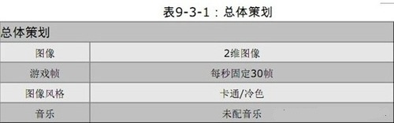
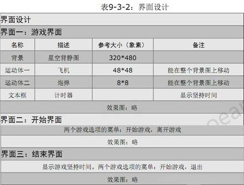
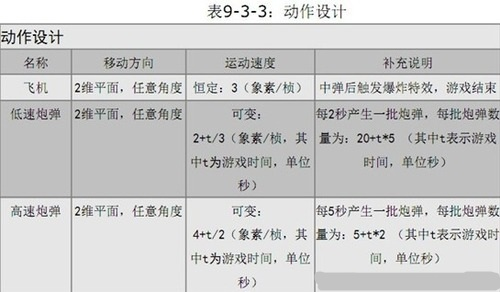

Android游戏开发实例第1步之：游戏策划
本期技术选题时Android平台的游戏开发，而“是男人就坚持20秒”是一款大家都非常熟悉的经典游戏，玩家需要操作飞机，不停地躲避铺天盖地的炮弹袭击，存活的时间越长越好。
这款游戏影响非常广泛，开发相对简单，游戏类型具备一定的代表性，因而经常被用于游戏开发教学。将通过这样一款普通寻常的游戏，向大家讲述非同寻常的Android游戏的开发思路。
游戏策划是游戏开发的第一步，是至关重要的一个阶段。本期先讲解第一步，下期是第二步Android游戏架构的讲解，敬请期待。首先进行游戏策划，必须敏锐把握市场需求的微弱变化，必须兼容智慧的碰撞，必须洋溢着激情的火花。一份好的策划案将赋予游戏灵魂，将赋予游戏在残酷的游戏竞争市场中披荆斩棘、长驱直入的神圣力量。
Android游戏策划案的形式往往是多种多样的，但是一份优秀的策划案应该包含以下两方面的内容：
1、需求满足。
2、游戏创意。
需求满足：很多策划师每天都会有不计其数的创意闪现，而纠结于如何取舍。优秀的策划师则会站在市场的角度去筛选和评估这些创意，高瞻远瞩而游刃有余。需求满足文档需要详细分析目标顾客的刚性需求，并完整展示满足需求的策略。需求满足将起到提纲挈领的作用，将直接影响到产品定位以及开发投入。
游戏创意：游戏的创意点是策划师智慧的结晶，它与“需求满足”部分紧密联系，前者是果，后者是因;前者是叶，后者是根。完美而饱含激情地展示游戏创意，不仅能让开发人员更加充满信心并激情澎湃地投入开发，而且能为将来的推广助一臂之力。
回到游戏开发实例，“是男人就坚持20秒”游戏大家都非常熟悉，游戏策划也非常简单，
▲表9-3-1：总体策划

▲表9-3-2：界面设计

▲表9-3-3：动作设计

小技巧：
游戏风格：在策划阶段明确指定美术风格能够避免不少的麻烦。
炮弹数量：当sprite(即炮弹)较多时，制约游戏运行流畅性的瓶颈不再是游戏逻辑，而是是画面绘制。因此，在不影响游戏性的基础上，可以考虑适当提高炮弹速度，以减少炮弹的数量。
游戏策划完成之后，程序和美术将接手游戏开发工作，双管齐下，一同实现“创意到产品”的伟大飞跃。